Llega la carga, arranca el FabLab y empieza a levantarse el canal de olas
Un trimestre de mucho volumen: llega por fin el primer contenedor de la ULB, el laboratorio de fabricación digital se pone a funcionar en pleno verano, se hacen los primeros análisis de agua real de la bahía y arranca la construcción del canal de olas mediano, mientras los doctorantes avanzan en sus artículos y en el trabajo con la comunidad.
Seguridad de los locales
Con la llegada del primer contenedor se instalaron tres cámaras de seguridad que vigilan las tres áreas interiores donde está la mayor parte de los bienes adquiridos con el proyecto ARES. Las instaló personalmente el director del proyecto, con la colaboración de Raciel Pupo-Santos, y no se pueden controlar ni extraer imágenes desde fuera del edificio.
Ante el llamado de la dirección universitaria a reportar necesidades materiales, la sección del Centro de Sistemas Complejos vinculada al proyecto hizo una sola petición: reparar con urgencia las ventanas de los locales donde se guardan los bienes. Se espera la respuesta.
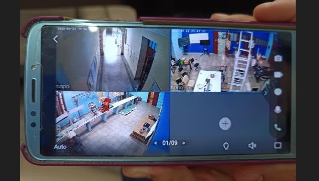
El contenedor de Bruselas
El contenedor había llegado al puerto de Mariel en abril, pero, con la falta de combustible, la empresa importadora (EMIDICT) no llegó a recogerlo, ni siquiera después de una reunión con sus funcionarios el 30 de junio para acelerar el proceso. El transporte lo costeó la mipyme Espoleta Tecnologías, con un aporte personal complementario, y los equipos llegaron al edificio de Física el 15 de julio de 2026. Durante las vacaciones se hizo un trabajo intenso: instalaciones eléctricas nuevas, montaje de las impresoras 3D y las máquinas herramienta, y un control de inventario detallado.
Se sigue de cerca el segundo contenedor desde Bélgica y el segundo envío desde Panamá, sometidos al mismo nivel de burocracia interna y con cada vez menos navieras dispuestas a transportar carga al país. Gracias a las gestiones de ALIANC Group Servicios Integrales —en especial del especialista Leonardo Durán— se obtuvo e instaló por fin, en septiembre, el software del espectrofotómetro que se le debía al proyecto.
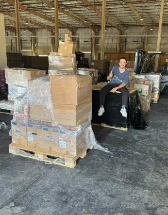
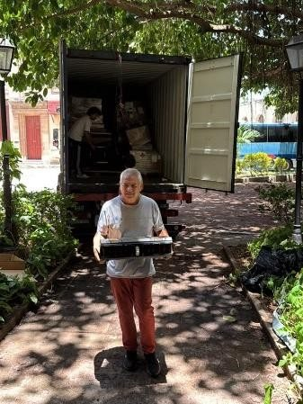
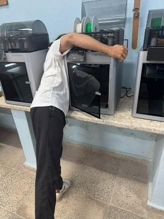
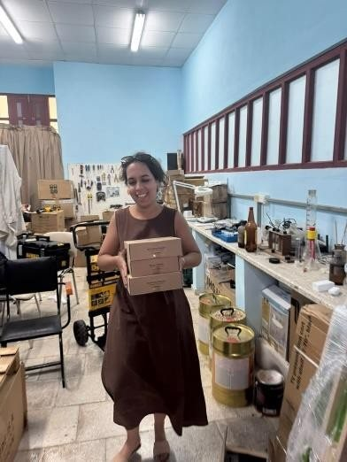
Primeras muestras reales de la bahía
Ante la escasez de mediciones sobre agua de la bahía de La Habana en el período, A. Rivera y E. Altshuler tomaron muestras en varios puntos y les midieron pH, conductividad y espectrofotometría UV-visible con el espectrofotómetro comercial adquirido con fondos ARES. Concluyeron que la mayor parte de la información útil está en la zona ultravioleta del espectro y que medir la turbidez de forma independiente ayudaría mucho a interpretar los espectros. Además observaron variaciones lógicamente correlacionadas entre espectrofotometría, conductividad y pH entre distintas localizaciones, lo que sugiere niveles de contaminación distinguibles con estas técnicas.
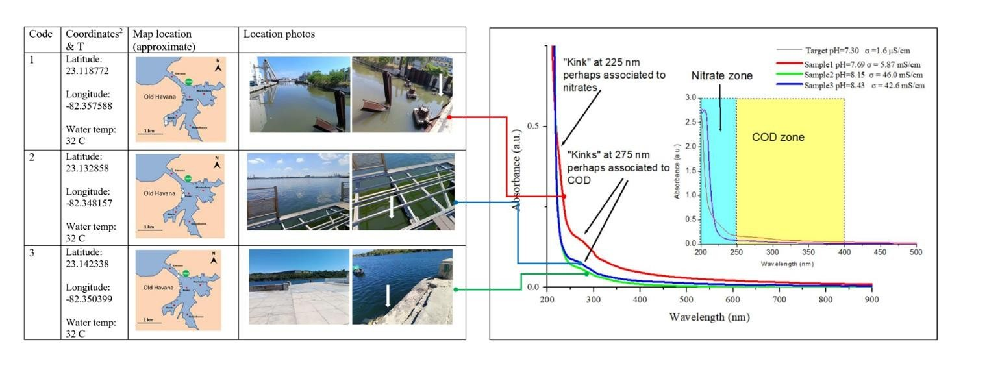
El canal de olas mediano
Este trimestre la construcción recibió un impulso extraordinario. Las simulaciones estructurales de varios diseños de canal, hechas por el estudiante de quinto año Jean Rafael López con un software especializado, cambiaron la filosofía del proyecto: hace falta una estructura de acero para sostener las planchas de acrílico, porque con otros materiales las deformaciones mecánicas serían inaceptables. Conseguir cantidades sustanciales de perfiles de acero en «L» y de sección cuadrada exigió redistribuir materiales gastables adquiridos con el proyecto y una donación de materiales del IMRE (Universidad de La Habana).
La obra arrancó en la segunda quincena de septiembre a buen ritmo, en parte gracias a las habilidades de herrero del propio Jean Rafael. Uno de los primeros pasos fue trasladar y reparar a fondo el canal de olas pequeño, de paredes de vidrio, con la colaboración de Marlon Mederos y Luis Abel Rodríguez, para que los experimentos no se interrumpan mientras se construye el grande. El informe lo presenta, con humor, como el nacimiento de una nueva disciplina de la Física: la «canalicultura».
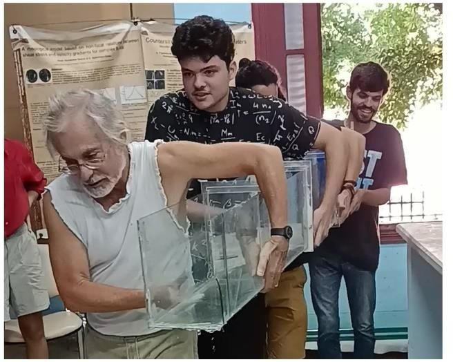
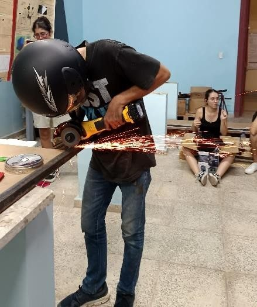
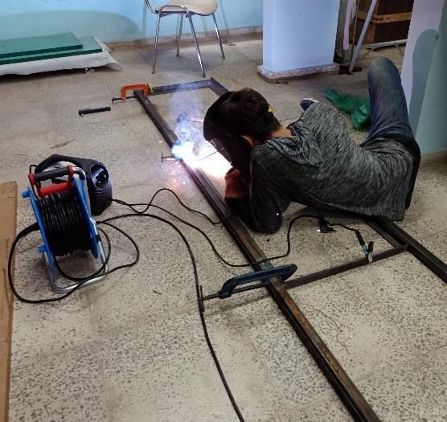
Microtaller «Kick off FabLabComplex»
Del 10 al 12 de agosto, en pleno período vacacional y con la dirección de la Facultad de Física manteniendo abierto el edificio, se demostró que el laboratorio de fabricación digital financiado por ARES era parcialmente funcional a menos de un mes del arribo de los equipos. La apuesta se apoyaba en que el edificio de Física comparte circuito eléctrico con el hospital «Calixto García» y sufre mucho menos los apagones.
Se formaron tres grupos para fabricar, desde cero, tres equipos relevantes para el proyecto: un anemómetro (dirigido por Orestes Chávez), un turbímetro (Alex Manuel Rivera) y un medidor de nivel de agua para un canal (Luis Abel Rodríguez). Participaron estudiantes de Física, ingenieros, jóvenes biólogos, un médico y una científica social: un grupo heterogéneo e inclusivo en todo sentido. A pesar de algunos tropiezos organizativos, el último día, a las 8 de la noche, terminaron con éxito los tres proyectos.
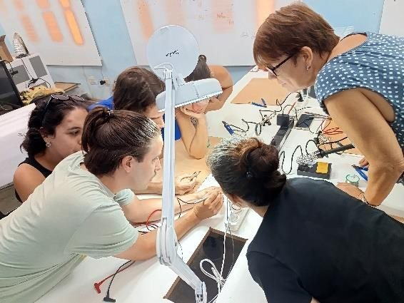
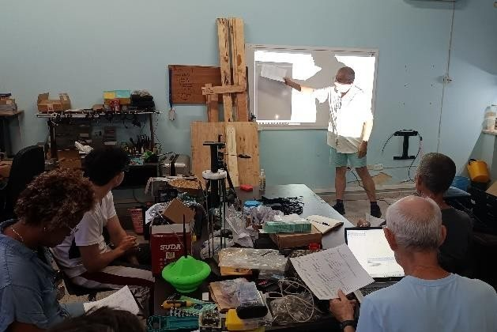
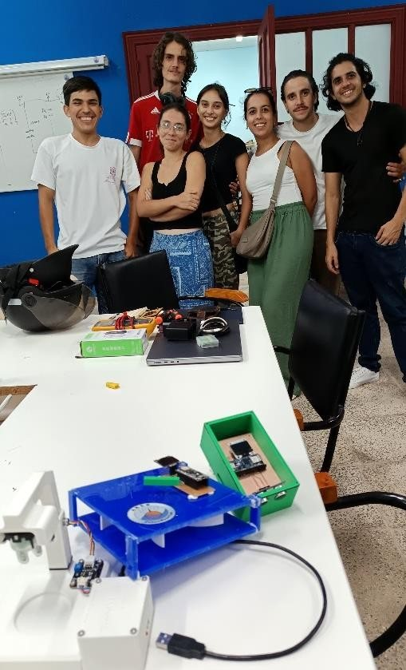
Acciones académicas
El doctorante Luis Abel Rodríguez de Torner impartió un seminario de avance de doctorado en el Centro de Sistemas Complejos de la UH el 28 de septiembre, tras participar del 14 al 18 de septiembre en la 5th Training School on Wave-Structure Interaction (Florencia), financiada por el proyecto. En la Escuela de Verano de la Facultad de Física para estudiantes de preuniversitario, Luis Abel dirigió un equipo con el proyecto «El secreto de la inclinación: cómo un ángulo decide hacia dónde flotan las partículas en el mar» y Daniela Martínez lideró «Calibración óptica del PlanktoScope: midiendo aumentos, espesores y biodiversidad»; el grupo vinculado al proyecto obtuvo el segundo lugar en la categoría de décimo grado.
Hay además varios artículos en marcha en ciencias exactas, naturales e ingeniería: uno enviado en abril a Environmental Modelling and Assessment, que aún espera la primera ronda de arbitraje anónimo; otro en revisión final por los autores para enviarse a Reviews of Scientific Instruments; y otros en preparación.
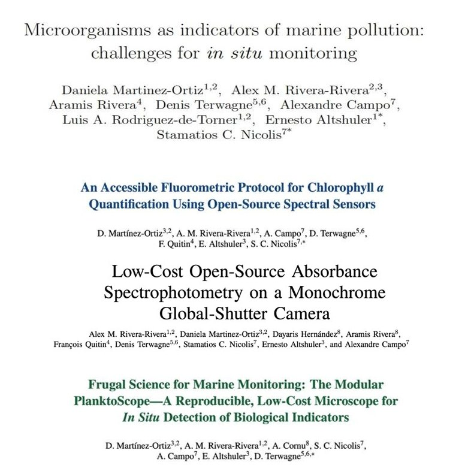
Ciencias sociales y trabajo con la comunidad
La doctorante Mayelín García-Remus continuó su estancia doctoral en la Universidad Católica de Lovaina (Louvain-la-Neuve) entre febrero y agosto de 2026 y participó en las actividades de formación del centro CIRTES, incluida la 10.ª Escuela Internacional de Formación en Economía Social (EMES). Concluyó la redacción de una revisión sistemática sobre participación comunitaria y ciudadana en el monitoreo de la calidad del agua y, junto a sus dos tutoras, definió la estructura de la tesis en tres artículos: la fundamentación teórica, el estudio empírico de la comunidad de Casablanca y una reflexión sobre el diálogo interdisciplinario en torno a la nueva tecnología.
En Casablanca continuó la aplicación de encuestas con el apoyo de la presidenta del consejo popular, y una sesión de trabajo con la directora del laboratorio del CIMAB coordinó la validación del equipo que se usará en las comunidades. A partir del FabLab de agosto se hicieron entrevistas a informantes clave sobre fabricación digital en Cuba y se diseñó un instrumento para medir la apropiación social de tecnologías, pendiente de validación. También se aprobó la propuesta de panel «Tecnologías y brechas de equidad» para el Seminario Internacional «Interseccionalidad, Equidad y Políticas Sociales», que se presentará en noviembre, y se celebró una reunión metodológica sobre escenarios de trabajo con la comunidad desde el paradigma de la ciencia ciudadana.
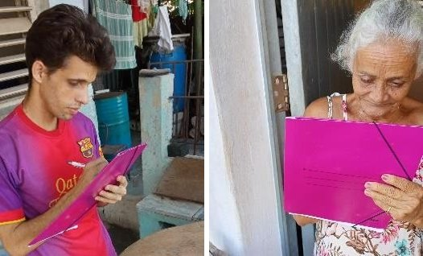
Balance del trimestre
A pesar de la dramática situación económica del país —serio deterioro de las condiciones de vida de los participantes, acceso nulo a las boyas de la bahía y mantenimiento cero de la infraestructura por vía institucional—, el proyecto atraviesa dos momentos de claro despegue: la organización de un laboratorio de fabricación digital (FabLabComplex) y el comienzo de la construcción del canal de olas.